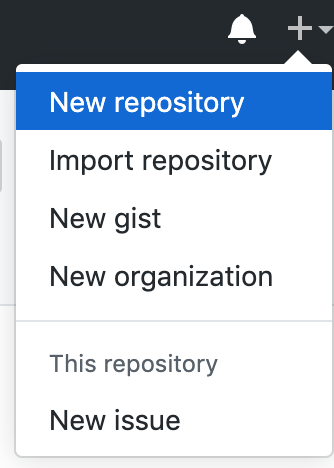

Project Zero or Removing barriers for creating OSS libraries
Jimmy Byrd
Codemash 2020
Who am I?
- Team Lead at Binary Defense
- Contributor/Maintainer of OSS projects
Why are we here?
-
Act 1
- Go through the concepts of creating your first OSS library
- Learning lessons along the way
-
Act 2
- Cover MiniScaffold
-
Act 3
- Create your own scaffold for your ecosystem
Learning Lessons
✅ = Something to add to a checklist for later
You have an idea
Create your repository

Get to coding

Problem solved
Shipping
Project is finished...

Your first issue
A new feature idea
Strangely worded, needs a lot of feedback about the use case
✅ Create an issue template for features
How do I build this thing again?
✅ I should create a script
How do I publish again?
✅ I should add the publishing to this script
✅Checklist
- Create an issue template for features
-
Have a build script
- Have a publish step
Issue #2
That new feature broke something for someone
Time to write tests
✅ I have to choose a testing library
✅ I should add this to the build script
Issue #3
Why does this library exist? How do I get started?
Write a README.md
✅ Explain why this library exists
✅ Explain how to get started
Issue #4
Needs a license
Go through the license choosing process
Issue #5
I'd like to contribute but how?
Write up a CONTRIBUTING.md guide
✅ https://mozillascience.github.io/working-open-workshop/contributing/
- Prerequisites for contributing
- How to build/test
- How to submit a PR
✅ Checklist
- Create an issue template for features
-
Have a build script
- Have a test step
- Have a publish step
- Choose a testing library
- Create a README.md
- Choose a License
- Create a CONTRIBUTING.md
Your first contributor's Pull Request (PR)
Someone just added a new feature
It looks like it works
✅ I have to build it locally, maybe I should create a build server
I have nitpicks about the formatting during review
✅ I should choose a standard formatter for my language
Weird IDE files were added in the commit
✅ I should have a comprehensive .gitignore file
✅ Checklist
- Create an issue template for features/bug reports/pull requests
-
Have a build script
- Have a test step
- Have a publish step
- Have a format step
- Choose a testing library
- Create a README.md
- Choose a License
- Create a CONTRIBUTING.md
- Have Build Server/CI setup
- Have an .editorconfig
- Have a .gitignore
The Issues, they don't stop coming
- ✅ API Documentation
- ✅ Release Notes/Changelog
- ✅ GitHub releases
- ✅ Standardizing project structure
- ✅ Ecosystem specific features
✅ Checklist
-
Have a standard codebase structure
- ISSUE/PULL_REQUEST templates
- src folder
- tests folder
- docs folder (or DOCUMENTATION.md)
- dist folder
- CHANGELOG/RELEASE_NOTES
- CONTRIBUTING
-
README
- Description
-
Answers
- Who (maintainers)
- What (this project does)
- Why (this project exists)
- How (Basics of getting started, may defer to docs)
- LICENSE
- CI files
- .editorconfig
- .gitignore
- dependencies
-
Build script
- Clean distributables/temp folders
- Restore packages
- Compile (if necessary)
- Run tests
- Create distributables (npm/nuget)
- Create a release commit
- Create a git tag
- Create a GitHub release
- Push distributables to dependency manager host
- Format code
-
Anything else specific to your language/platform
- Sourcelink (.NET)
- GenerateAssemblyInfo (.NET)
- Generate Docs (if necessary)
Big list

Enter MiniScaffold
Whats in the box?
- Standard project structure for dotnet projects
- FAKE for build automation
- Paket for dependency management
- Expecto for automated testing
- AltCover for code coverage
-
Fantomas for code formatting
- Also a good .editorconfig
- SourceLink for debugging NuGet packages
- VSCode plugin recommendations
- .gitignore
- FSharp.Formatting for Documentation Generation
- TravisCI/Appveyor/GitHub Actions for build servers
-
Metadata starting point
- README
- RELEASE_NOTES
- LICENSE
- Simple Release Workflow
Prerequisites
- Install git
- Install .Net core
- If on macOS or Linux, install Mono
- If on Windows ensure you have at least .NET Full Framework 4.6.1 installed
- Recommended IDE is VSCode with Ionide
- Create a NuGet account
- Create a GitHub account
- Create a TravisCI account
- Create an Appveyor account
Installing MiniScaffold
Install the dotnet template from NuGet:
1:
|
|
Use the template
Then use the template to create your own library. Replace MyCoolNewLib with your own library name and MyGithubUsername with your own GitHub name. If you have trouble picking a library name then generate one.
1: 2: |
|
Running your first build
1: 2: 3: 4: 5: 6: 7: 8: 9: 10: 11: 12: 13: 14: 15: 16: 17: 18: |
|
Making a Release (prereqs)
- Setup git upstream
- Setup NuGet apikey
- Setup GitHub apikey
- Add to
RELEASE_NOTES.md
1: 2: 3: |
|
Making a Release
1:
|
|
Demo
Next steps?
-
Use dotnet?
- Try out MiniScaffold
-
Use another language/framework?
- use my checklist as a way to craft your own!